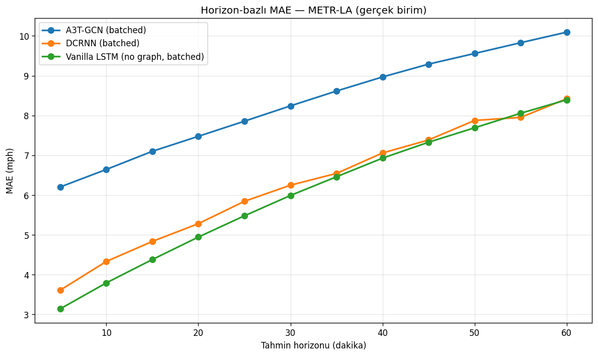
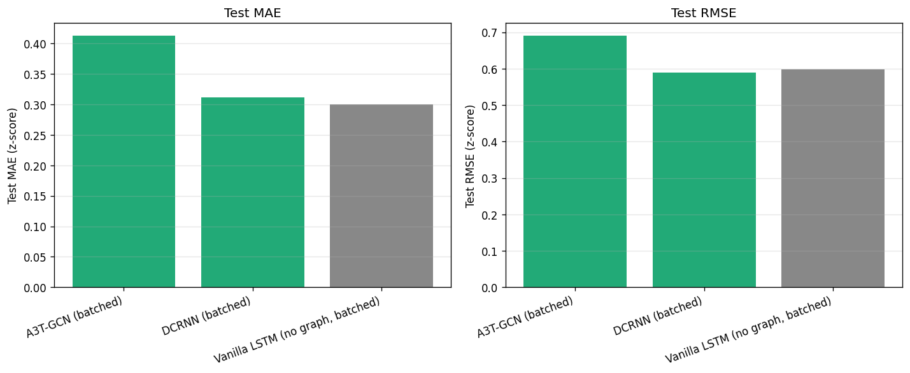
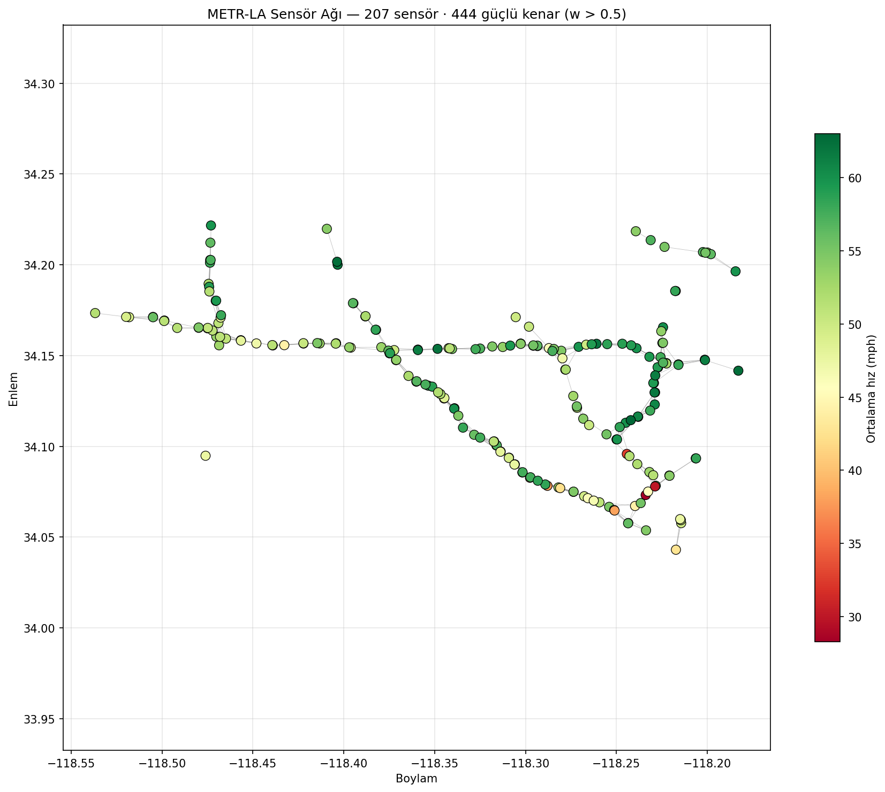
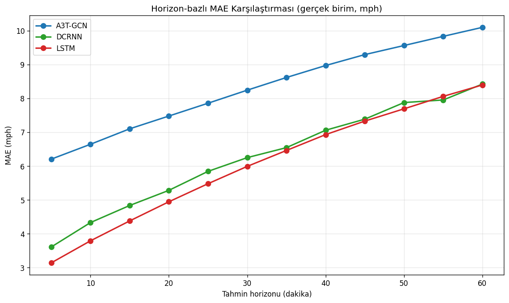

Los Angeles otoyol ağındaki 207 sensör üzerinde spatio-temporal graf sinir ağı mimarilerinin (DCRNN, A3T-GCN ve klasik LSTM) yeterlilik analizi ve etkileşimli kontrol panosu prototipi.
Bu çalışma, trafik tahmininde graf sinir ağlarının yeterlilik koşullarını sistematik olarak incelemekte; mimari seçiminin operasyonel ihtiyaca göre nasıl yapılması gerektiğini ortaya koymaktadır.
Yönlü difüzyon konvolüsyonu + GRU. METR-LA'nın asimetrik komşuluk yapısını doğrudan modelleyebilen tek mimari. Uzun ufukta ve RMSE metriğinde öne çıkıyor.
Klasik graf konvolüsyonu + zamansal dikkat mekanizması. Simetrik komşuluk varsayımı nedeniyle yönlülük bilgisini kaybeden mimari — çalışmanın karşılaştırma noktası.
Graf yapısı kullanmayan kontrol grubu. Paylaşılan parametreli tek katmanlı tekrarlı ağ. Kısa-orta ufukta sürpriz biçimde rekabetçi karşılaştırma noktası.
Test kümesi üzerinde 10 epoch, hidden=128 ile elde edilen sonuçlar. Mimari yeterliliği tahmin ufkuna ve hata metriğine bağlı olarak değişmektedir.


Aşağıdaki panoda kavşaklara trafik müdahalesi yapabilir ve DCRNN modelinin 60 dakika sonrasını nasıl tahmin ettiğini gözlemleyebilirsiniz. Müdahaleli senaryo ile baseline yan yana karşılaştırılır; ikisi arasındaki fark haritası graf yapısının yayılma etkisini doğrudan gösterir.
💥 Kaza
senaryosuna tıklayın — tek bir kavşağı tıkadığınızda komşu
kavşaklara dalga etkisinin nasıl yayıldığını izleyebilirsiniz.
Los Angeles otoyol şebekesindeki 207 hız sensörünün gerçek coğrafi konumları. Sensörlere tıklayarak hız ve komşu sayısı bilgilerini görebilir, haritayı büyütüp inceleyebilirsiniz.

